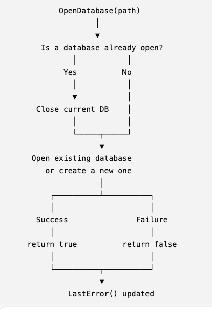
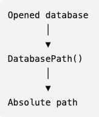
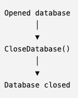
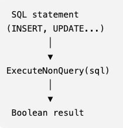
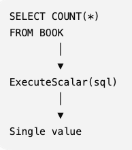
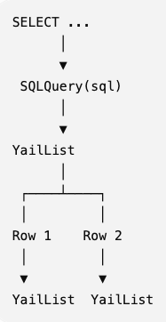
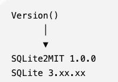

SQLite2MIT is a non-visible MIT App Inventor extension providing direct access to the native SQLite library included with Android.
The extension returns query results directly as MIT App Inventor lists (YailList), avoiding CSV or JSON conversions.
Property |
Description |
|---|---|
Debug |
Enable or disable debug logging. |

Opens an existing database or creates a new one.
Parameter
Name |
Description |
|---|---|
path |
Absolute or relative database path. |
Returns
true if successful.
If a database is already open, it is automatically closed before to be re-opened
The caller does not need to call CloseDatabase() explicitly before opening another database
The database is created automatically if it does not already exist
Returns the absolute path of the opened database.
Returns the last SQLite error message. Returns an empty string if the previous operation succeeded.

Library.db
The database is stored inside the application's private storage. Advantages
No Android storage permission required.
Private to the application.
More secure.
Limitations
Not directly accessible by file explorers.
Cannot normally be accessed by other applications.
If database exchange is required, the MIT application must implement import/export using MIT file components.
Example
/storage/emulated/0/Android/data/<package.name>/files/Library.db
Allows the application to choose the database location. The actual accessible folders depend on Android version and granted permissions.

Closes the current database.

Executes SQL statements that do not return rows. Typical statements:
CREATE TABLE
CREATE INDEX
INSERT
UPDATE
DELETE
DROP TABLE
ALTER TABLE
Returns true if
successful.

Executes a query returning a single value. Example
SELECT COUNT(*) FROM BOOK;
Returns the first column of the first row.

Executes a SELECT statement. Returns a MIT App Inventor YailList. Each row is itself a YailList. Example
SELECT
Title,
Author
FROM BOOK;returns
(
("Dune" "Frank Herbert")
("Foundation" "Isaac Asimov")
)

Returns
SQLite2MIT version
SQLite library version
When Debug is enabled, SQLite2MIT writes diagnostic information into
SQLite2MIT.log
Typical information:
Database opening
Database closing
Executed SQL statements
Errors
Database path
When using MIT AI Companion, the log file is typically stored in
/storage/emulated/0/Android/data/edu.mit.appinventor.aicompanion3/files/
If a database is already open, it is automatically closed before to be re-
No external SQLite library is required.
Standard SQLite syntax is used.
The extension does not manage files, JSON or CSV conversion.
SQLite2MIT Version 1.0.0